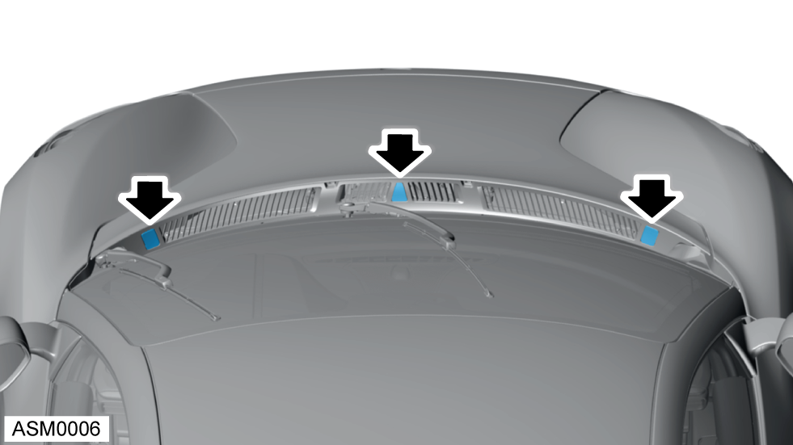
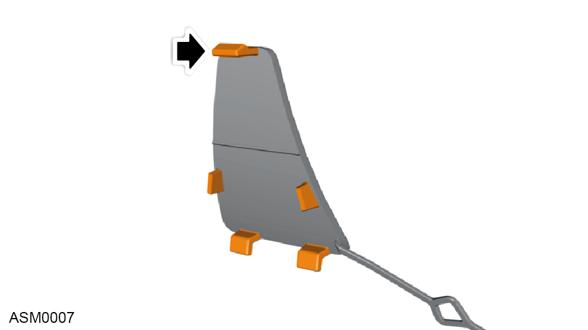
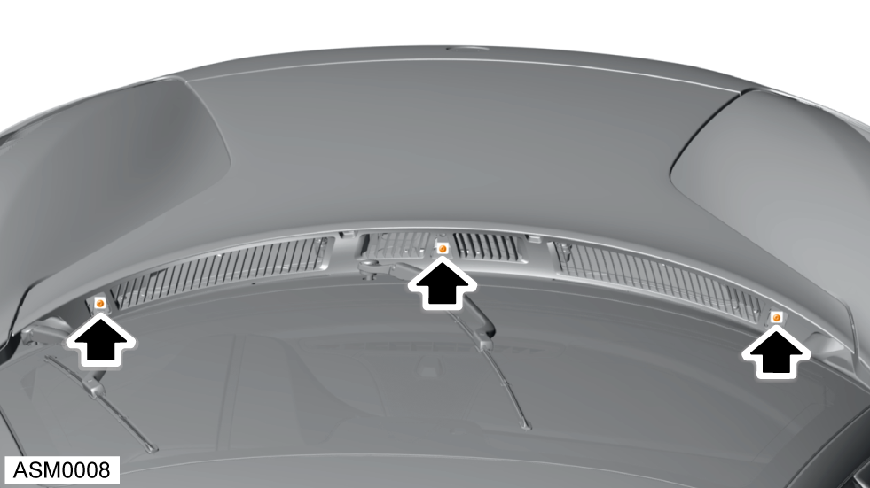

Open Access Hatch - Front
Print
Operation Code: 10.09.00-01
Removal

- Unclip trims (x3) from access hatch grille.
NOTE: Unclip from upper edge first.

- Refer to illustration for trim clip location.

- Remove M6x20 bolts (x3) securing the access panel to access panel brackets. Torque 10 Nm.
- Open access hatch and engage access hatch stay.
Installation
- Installation is the reverse of removal procedure.